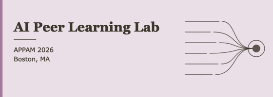
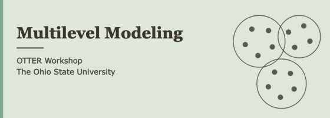
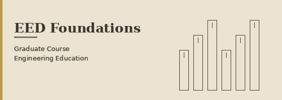
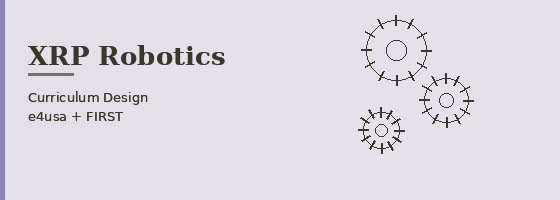
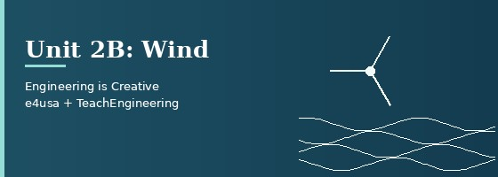

Workshops and teaching materials.

Facilitator for the AI Peer Learning Lab session From Text to Evidence: AI-Assisted Analysis and Measurement at the 2026 APPAM Fall Research Conference. A hands-on Colab notebook walks through collecting Reddit posts, modeling topics with BERTopic, labeling them with AI, and analyzing sentiment, with attention to terms of service, ethics, and human checks of AI labels.

Organizer and presenter of the first workshop in OTTER (Open Toolkit for Training in Education Research), a graduate-student-led research methods learning collective. The session moves from why grouped data need special care to random-intercept and random-slope models.

A course design completed as teaching training; the course itself was not taught. The syllabus, instructional plan, and assessment outline a graduate course on the field's history, key theories, and research methodologies.

A supplementary curriculum kit designed for the XRP robotics platform, grounded in the 7 Smart Teaching Principles. The kit guides teachers through scaffolded programming activities — from natural language pseudocode to block-based coding to Python — with structured feedback, tiered challenges, and student reflection.

A pre-college engineering unit (grades 9–12) designed for the Engineering for Us All (e4usa) course and published on TeachEngineering. The unit contains 13 lessons and 22 activities exploring how creativity relates to engineering through the design of wind turbines. Full access requires a free TeachEngineering account; sample materials are available below.